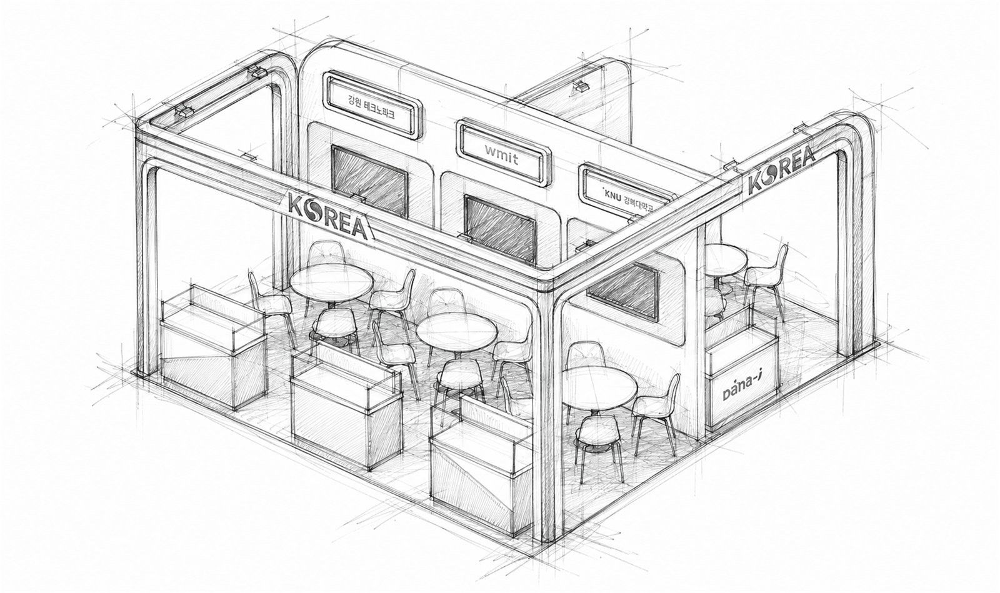
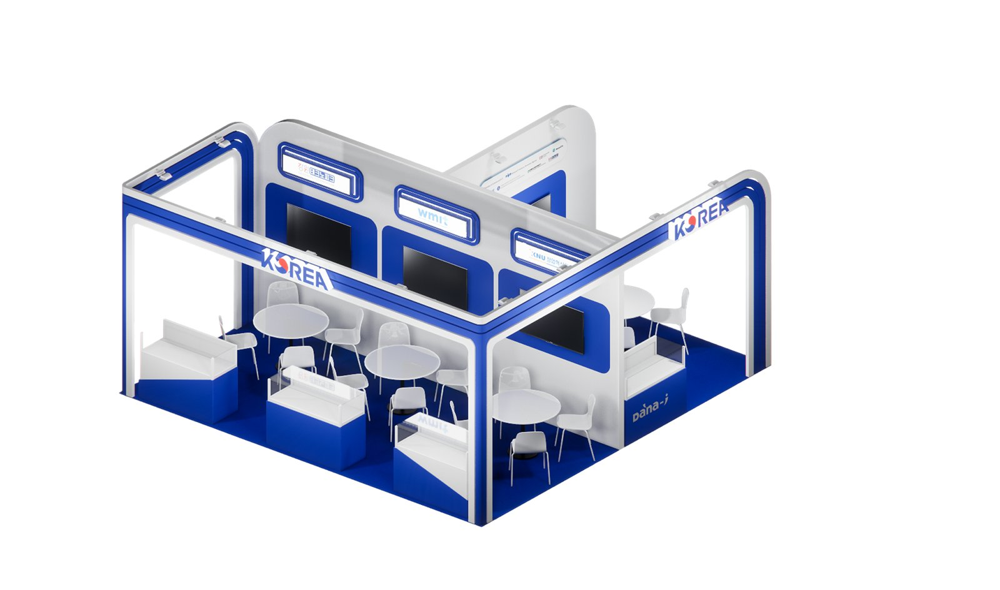
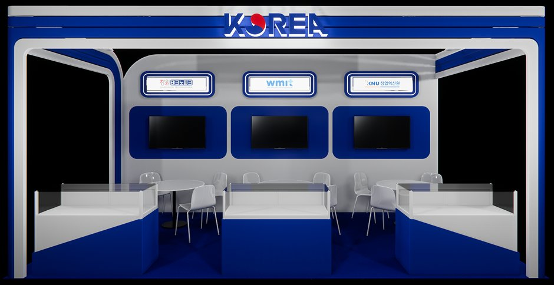
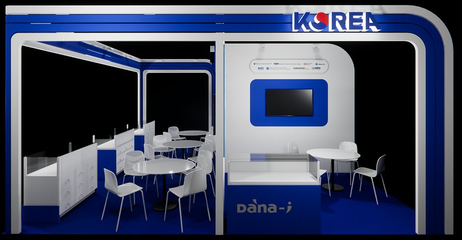
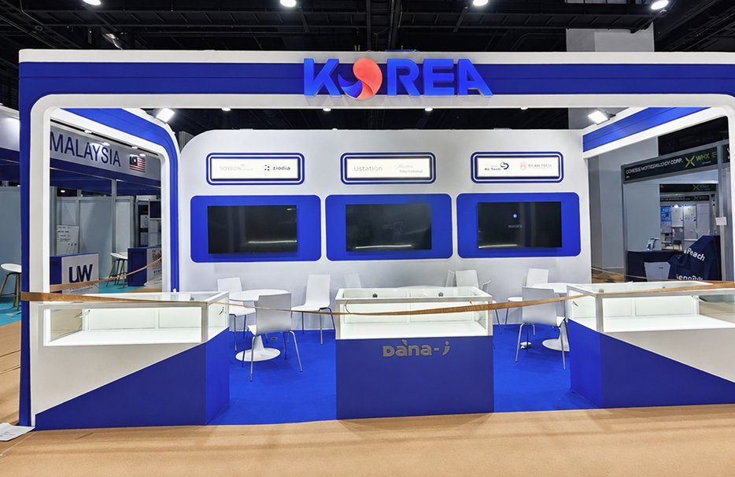
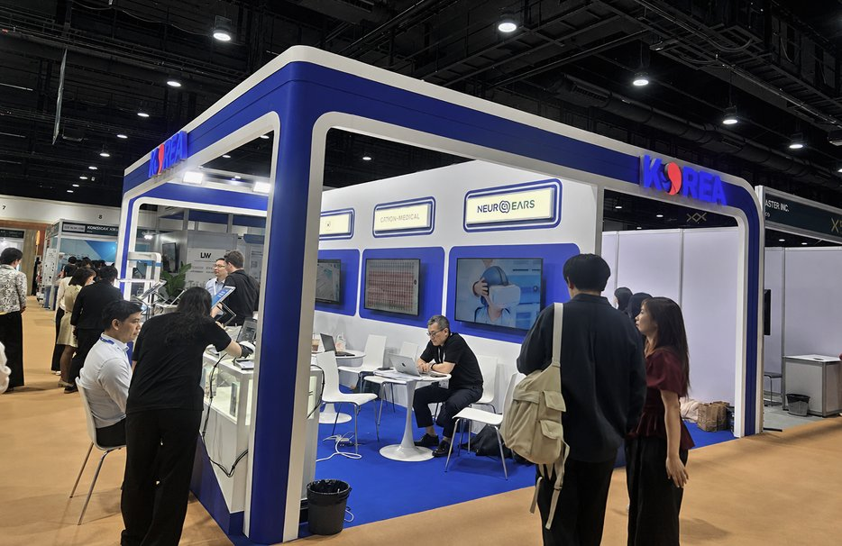
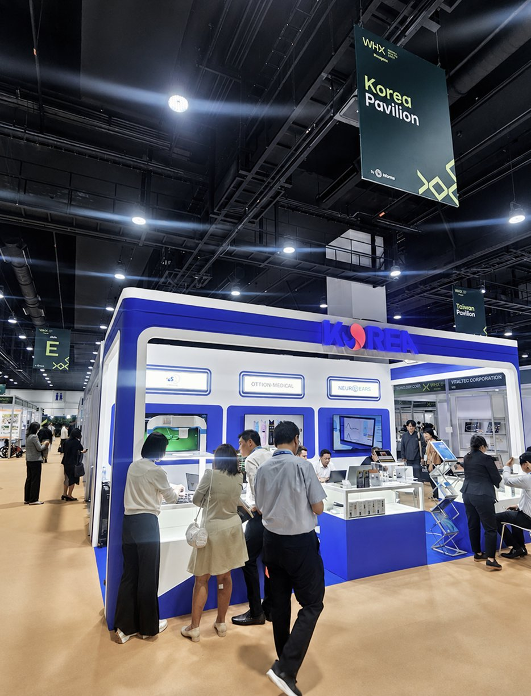

A national pavilion built as a single frame, with room for every company inside it.
Designed the Korea Booth for WHX Thailand Wellness & Healthcare Expo 2026, using Korean-inspired blue, red, and white tones with clean, rounded forms to create a modern and approachable healthcare environment.
Medical trade booths default to clinical white, and a national pavilion has an extra problem on top of it: the country has to be the headline while several companies each need to be found, sat at and remembered. Strong national colour makes the pavilion legible and can easily flatten the companies inside it. The design had to be emphatically Korean at fascia height and neutral everywhere a product is shown.
A pavilion sells the country. The bays inside it sell the companies. Confusing the two loses both.
Korea sits beside Malaysia and Taiwan in the same hall. Visitors navigate by country sign, not by company, so the fascia is the pavilion's whole first impression.
The category's visual habit is white panels, sharp corners and dense text. Rounded corners and a warm floor make the same content feel approachable without making it look unserious.
Wellness and diagnostic equipment is demonstrated, not displayed. Every bay needed a work surface at standing height and power, which decided the counter section before anything else.
Comes for a demonstration and a price. Needs to sit at a table with a laptop between them and the supplier, undisturbed by the aisle.
Scanning the pavilion for a category they already sell. Reads the three company names on the wall and goes straight to one.
Gangwon Technopark, wmit, KNU and the others each need equal standing: same sign size, same screen, same table, no best position.
Design intent, not measured data. Shows the priority the plan was built on: a pavilion of meetings, not of display cases.
The kit is the fairness mechanism: nothing in it can be upgraded by one exhibitor at another's expense.
A rounded blue portal frames the whole footprint and carries the country name on both aisle faces. Inside it, the wall is divided into identical bays of white panel, blue screen recess and lightbox sign, and the floor is blue only where the pavilion ends. Nothing else is added: the pavilion is a frame, and the companies fill it.

Rounded corners, KOREA on both open sides, lit from within the beam so the name holds at night-lit hall levels.
White ground, blue recess, screen and lightbox name, one module repeated, which is what makes the pavilion read as a system.
Glass-topped units on the aisle edge, blue base and white top, holding devices at the height they are demonstrated.
Round tables and light chairs, one set per bay, placed so a conversation can spread without blocking the entry.
KOREA is the only word above 2.5 m. Everything else in the pavilion sits below it, so the hierarchy never has to be argued.
Names in identical lightboxes on the wall, plus one logo on the front of each counter. Two placements, no exceptions.
Blue for structure and floor, white for anything a product sits on or against, red reserved for the national mark alone.
One radius on the portal, panels, recesses and counters, the single detail that separates the pavilion from clinical white shell schemes.
Spots on the beam wash the bay wall; the blue carpet stops exactly at the booth line, which is what defines the pavilion with no walls to do it.

The blue portal and the hanging pavilion sign locate it from the aisle.
Three lightboxes at eye height answer "who is here" in one pass.
Two open sides, no reception desk, no threshold to cross.
Vitrine and screen together: the object and how it is used.
A table per bay, so a meeting does not displace the next visitor.
At thirty metres the pavilion is a blue frame with one word on it. That is deliberate: visitors are navigating by country at that distance, and nothing else would survive the reduction.
Once past the beam the country disappears and the bays take over. Each is the same kit, so the visitor compares products rather than booth budgets.
Materials, colours, lighting, graphics and carpet were issued as separate packages, so a fabricator in Bangkok could build a Korean pavilion without a Korean reference on site.





Making the country a portal rather than a backdrop gave the pavilion a silhouette from two aisles and still left every side open to walk into.
Because every bay had the same sign, screen, vitrine and table, no exhibitor could ask for a better position, the system, not the designer, settled it.
On site the devices ended up spread across the vitrine tops and the tables, and the bays lost some of their order. I would design the counter with a fixed demonstration surface and a cable route, instead of assuming the vitrine top could be both display and desk.